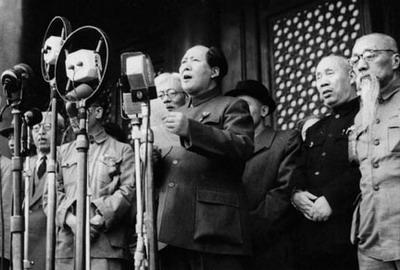

毛泽东
中国人民的领袖，伟大的马克思主义者

毛泽东在天安门宣布新中国成立
生平
- 毛泽东 1893年12月26日生于一个农民家庭。
- 1920年11月，在湖南创建共产主义组织。
- 1923年6月，出席中共“三大”，被选为中央执行委员，参加中央领导工作。
- 925年冬至1927年春1，先后发表《中国社会各阶级的分析》、《湖南农民运动考察报告》等著作。
- 1938年10月，在中共扩大的六届六中全会上提出“马克思主义中国化”的指导原则。在抗日战争时期，他发表《论持久战》、《〈共产党人〉发刊词》、《新民主主义论》等重要著作。
- 1945年4-6月主持召开中共第七次全国代表大会，作《论联合政府》的报告。大会制定了“放手发动群众，壮大人民力量，在共产党的领导下，打败日本侵略者，解放全国人民，建立一个新民主主义的中国”的战略。毛泽东思想在这次大会上被确定为中共的指导思想。他从七届一中全会起至1976年9月9日逝世为止，一直担任中共中央主席。
- 1949年10月1日，中华人民共和国建立，他当选为中央人民政府主席。
- 1950年6月，主持召开中共七届三中全会，提出为争取国家财政经济状况的基本好转而斗争的总任务。10月，迫于美国军队攻入朝鲜民主主义人民共和国、威胁中国东北部的形势，以他为首的中共中央决定进行抗美援朝战争。
- 1950-1952年,在他的领导下，进行了土地改革、镇压反革命和其他民主改革。
- 1953年6月,按照他的建议，中共中央宣布了党在过渡时期的总路线，开始有系统地进行社会主义工业化和对生产资料私有制的社会主义改造。
- 1958年5月，发动“大跃进”和农村人民公社化运动。
- 1959年7月，主持召开庐山会议。
- 1966年5月发动了“文化大革命”运动，